Українські дрони: технології, що змінюють війну
Сучасна війна в Україні стала не лише боротьбою людей, а й протистоянням технологій. Особливу роль у цьому відіграють безпілотні літальні апарати (дрони), які Україна активно розробляє та використовує.
🚁 Що таке військові дрони
Дрони — це безпілотні пристрої, які можуть виконувати різні завдання без участі пілота. Вони керуються дистанційно або працюють автономно.
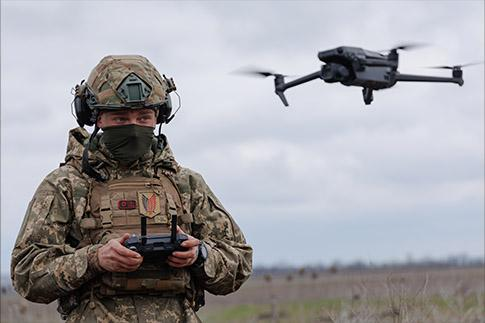
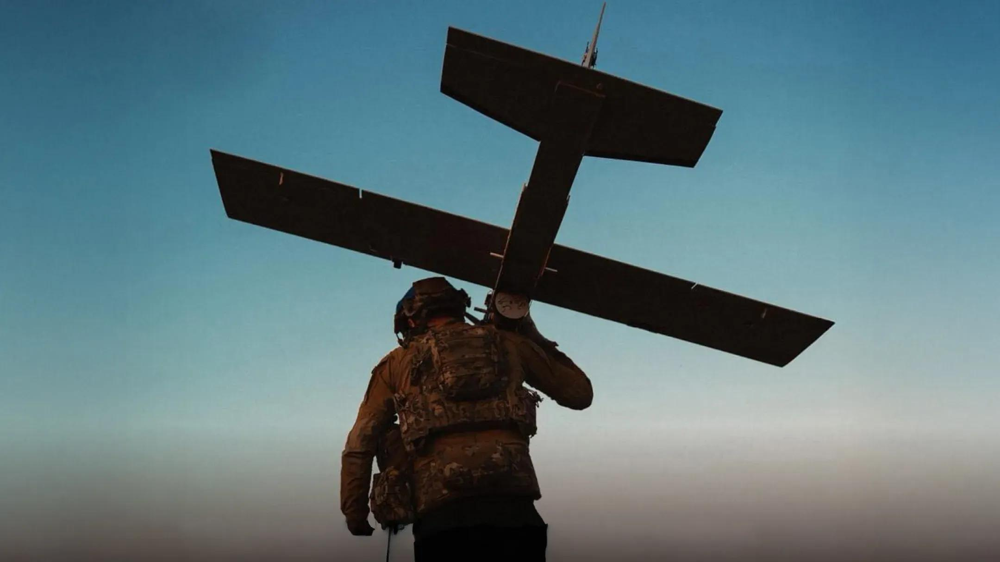
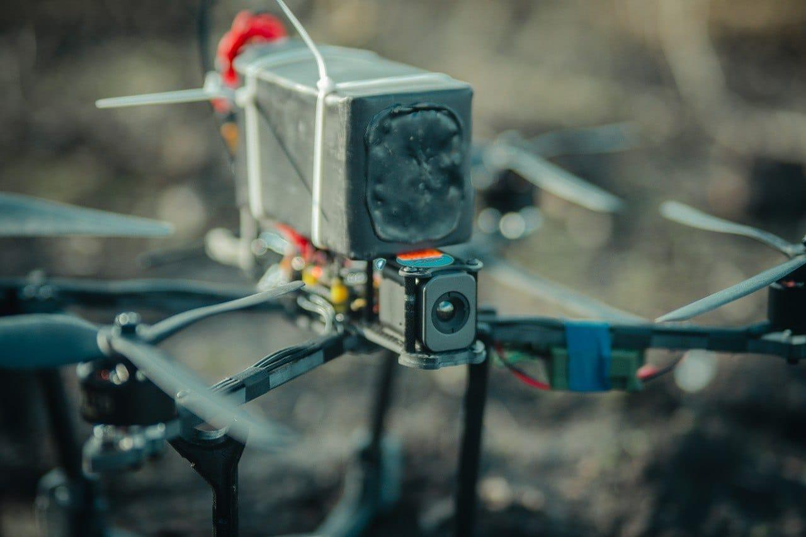
В Україні дрони використовують для:
- розвідки (спостереження за ворогом)
- коригування артилерії
- доставки вантажів
- ударних операцій
⚙️ Які дрони виробляє Україна
Україна створює різні типи дронів — від маленьких до великих ударних систем.
🔹 FPV-дрони
Найпоширеніші та найдешевші. Керуються через окуляри в режимі реального часу.
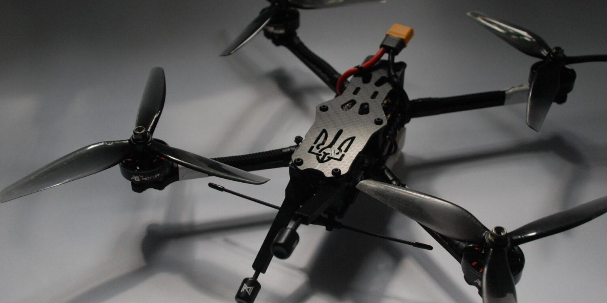
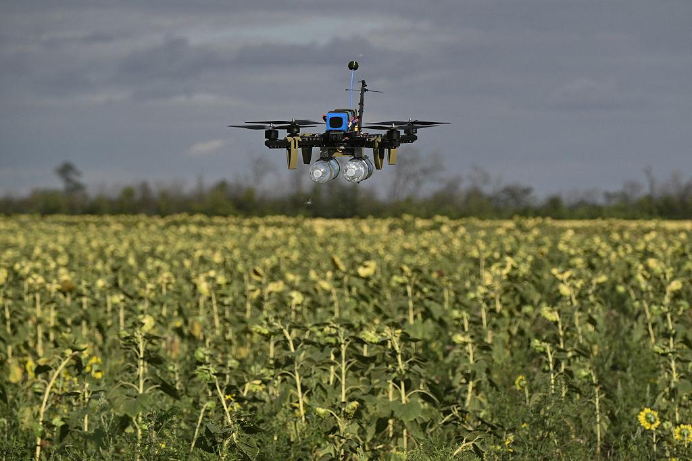
Використовуються як “камікадзе” — вони точно вражають ціль.
🔹 Розвідувальні дрони
Допомагають знаходити ворога та передавати інформацію.
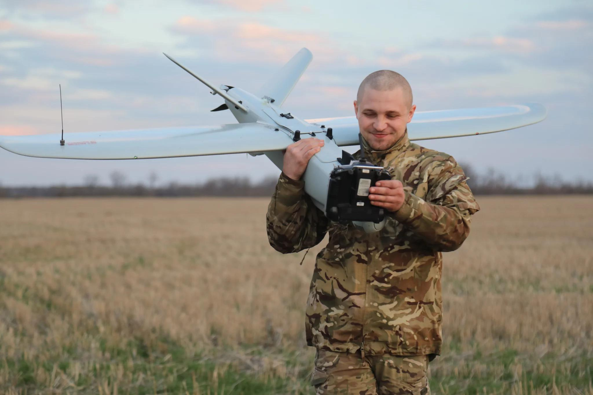
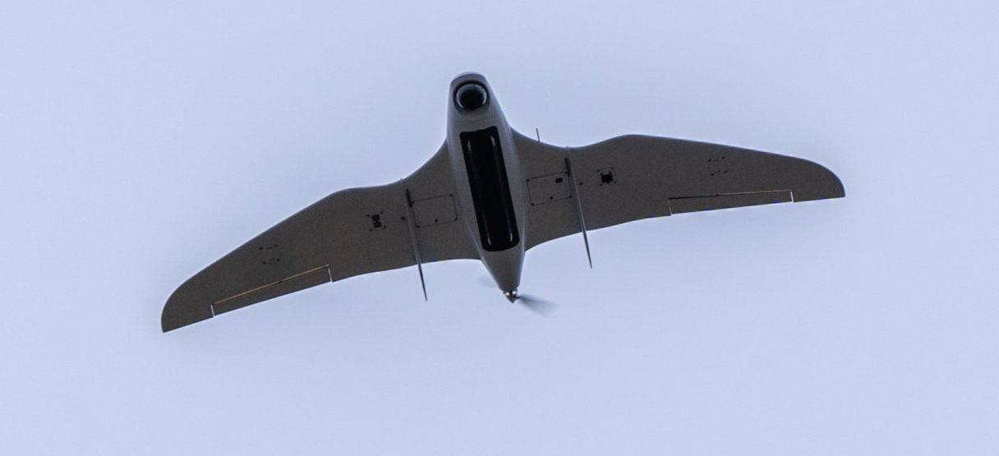
Відомі моделі:
- «Лелека-100»
- «Фурія»
🔹 Ударні дрони
Це більш складні апарати, які можуть нести вибухівку та вражати цілі на великій відстані.
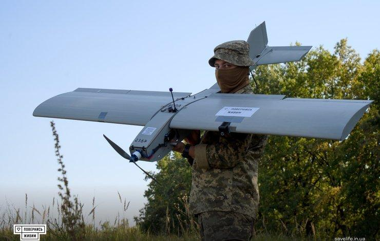
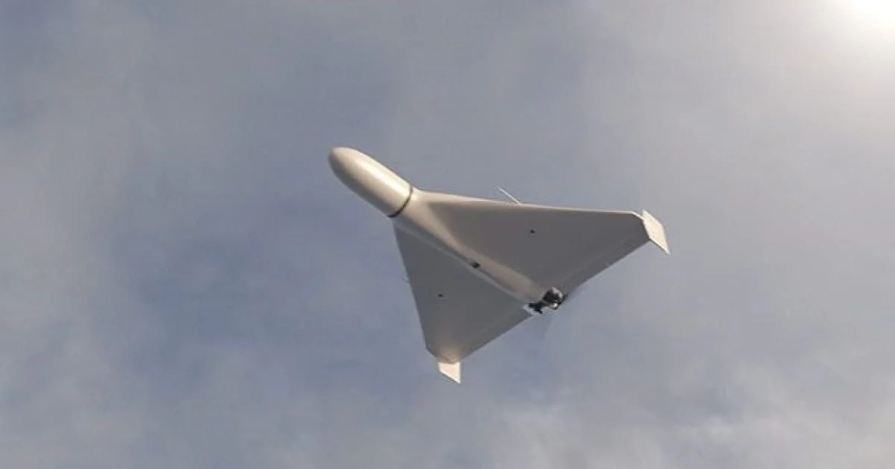
Україна також розробляє аналоги дронів дальнього радіусу дії.
🧠 Чому дрони такі важливі
Дрони стали ключовим елементом сучасної війни, тому що:
- вони дешевші за техніку
- зменшують ризик для солдатів
- дають точну інформацію в реальному часі
- дозволяють бити по цілях дуже точно
🚀 Майбутнє технологій
Україна активно розвиває власне виробництво дронів. У цьому беруть участь як великі компанії, так і невеликі команди інженерів та волонтерів.
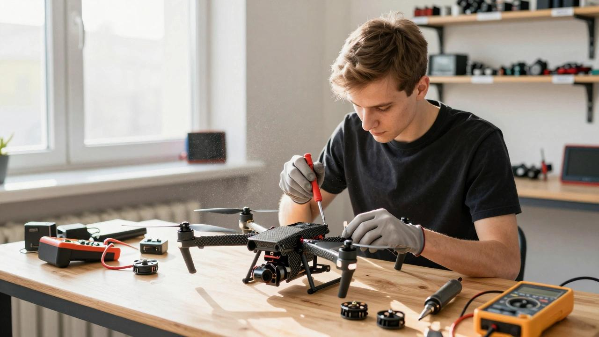
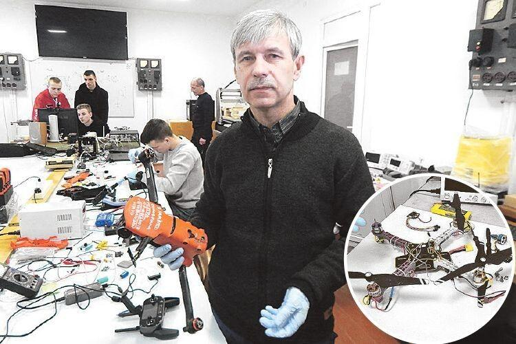
Щодня з’являються нові моделі, які стають розумнішими, швидшими та ефективнішими.
⭐ Висновок
Дрони стали символом сучасної української винахідливості та сили. Вони не лише допомагають у захисті країни, а й показують, як технології можуть змінювати хід історії.